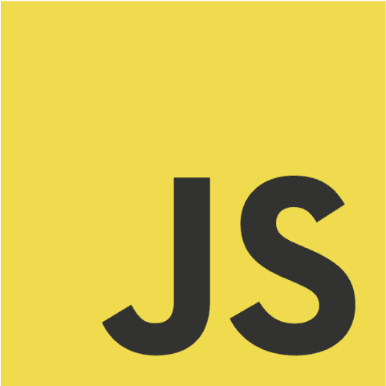

Nama saya Dimas Prasetyo
saya lahir di depok dan menetap sampai saat ini, saya bersekolah di
SMK Citra Negara dan menekuni jurusan Rekayasa Perangkat Lunak

Selama ini saya belajar otodidak web development bukan hanya dari sekolah namun juga dari Youtube. Seperti pada channel WPU
, PZN
, Kelas Terbuka
, dan masih banyak lagi.
Dan saya sangat berterimaksih kepada Dicoding dan juga dengan BAPAREKRAF yang telah memberikan saya kesempatan beasiswa untuk belajar Dasar Pemrograman

HTML sudah menjadi keharusan untuk mempelajari nya, dan sampai saat ini saya masih memperdalam nya sebagai fondasi utama dalam membuat website

Saat ini saya masih terus memperdalami CSS yang menurut saya adalah hal yang sangat penting untuk kedepannya, walaupun sekarang sudah ada Bootstrap, Tailwindcss dan sebagainya.

Saya sangat suka dengan JavaScript yang membuat website lebih interaktif. Rencana nya saya akan memfokuskan diri untuk belajar bahasa ini hingga menguasai Framework React dan Vue

Saya mempelajari bahasa php belum lama ini sekitar 4 bulan untuk dapat mengerjakan Ujian Kelulusan sekolah dengan menggunakan Framework Laravel

Saya sedikit mempelajari Python dan saya suka dengan bahasa ini karna kemudahan nya, tapi untuk saat ini saya masih belum ingin memfokuskan pada bahasa ini

Saya masih memperdalam Framework Laravel yang sebelumnya saya gunakan untuk Ujian Kelulusan sekolah, dan semenjak saat itu saya sangat suka dengan Framework ini

Bootstrap adalah Framework UI yang pertama kali saya pelajari dan sampai sekarang terkadang masih saya gunakan

TailwindCSS adalah Framework UI yang saya sering gunakan pada saat ini daripada Bootstrap dikarenakan kemudahan dalam mmengingat dan membaca dokumentasi nya

Saya masih mempelajari lebih jauh penggunaan figma, karena masih banyak sekali yang belum saya tahu tentang figma